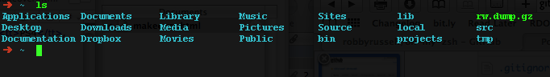
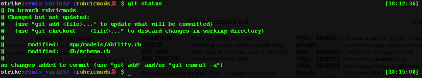

Break out the Jolt Cola, elbow grease, and your text editor. It's time to turn your Unix shell into a hot rod. It's time for an extreme shell makeover.
No matter what car you drive, you have to appreciate the hot rod. There's nothing quite like a 1969 Dodge Charger with five-spoke mag wheels, wide tires, a midnight black finish, lots of chrome, and a snarling big block. It's a masterpiece -- the car Rodin's The Thinker would drive. A classic.
The Unix shell is a classic, too, sans the big fenders. But with a little elbow grease, wrench-time, and after-market mods, it can look and perform like a hot rod, too. You might call this "Top Gear-head", "Geek Eye for the Straight Guy", or "Extreme Shell Makeover". I call it "Pimp My Shell".
Beneath that blinking prompt, your shell -- be it Bash, Z Shell, or something else -- has lots of moving parts that can be augmented, tuned, and tweaked. Here's a summary (as many of these have been discussed in detail in prior columns).
In addition to these gears and levers, you can also change how your shell looks. The nondescript "dollar sign" prompt can sport colors, reflect your current working directory, and even show the weather. If you can capture bits of information with a command, you can probably display that data at the prompt.
Much like other operations in the shell, an environment variable controls what's drawn each time the shell presents a prompt. The variable, PS1, or "prompt string level 1", is interpreted when rendered much like the command-line itself. PS1 can contain other shell and environment variables, in-place command evaluation (via backquotes), and specialized literals. Here's an initial example:
$ export PS1="\u@\h \w >" strike@nostromo ~ > whoami; hostname; pwd strike nostromo /home/strike strike@nostromo ~ >
Initially, the prompt was the simple $. Setting the environment variable PS1 (hence, export instead of set) to \u@\h \w > renders your user name (the meaning of \u), the literal @, your hostame (\h), your present working directory (\w), and the literal string > .
Other special literals include \t for the time (in 24-hour format), \d for the date (in weekday, month, date format), and \! for the shell history number. If you keep your shell window open for extended periods, you can quickly repeat a previous command with !nnn, where nnn is the number shown in the prompt for the command.
strike@nostromo ~ > export PS1="\! $ " 776 $ find . -name ... ... 999 $ !776 find . -name ... 1000 $
Have you ever wondered how the shell prompt changes to the octothorpe (#) whenever you are or behave like the superuser, root? By default, the standard prompt is actually the special operator \$ . If your effective UID is 0, this emits #; otherwise, it emits a $.
Abbreviations also exist to change colors. Another sample demonstrates:
strike@nostromo ~ > export PS1='$ '
$ blue='\e[0;34m'
$ none='\e[m'
$ export PS1="$blue\u@\h$none\w>"
strike@nostromo ~ >
The (rather unwieldy) abbreviation \e[0;34m enables blue. Its complement, \e[m, resets the rendering color to the default for your shell window. Both codes are enclosed in single quotes to prevent the shell from interpolating characters that have special meaning. This example also shows you can use variables in a prompt, too. Here, the variables blue and none are expanded when the command-line is interpreted and the prompt is set to the string that results from the expansion. If you want to expand a variable dynamically each time the prompt is rendered, you must escape its interpretation when set. Let's look at just that:
strike@nostromo ~ >export PS1="\$somevar $ "
$ somevar="hello"
hello $
The phrase \$somevar escapes the dollar sign, avoiding interpretation of the variable in the command where the prompt is set. Instead, the interpretation occurs whenever the prompt is drawn. If somevar changes -- because of other commands , the prompt displays its new value.
You can also call any command or function in the prompt, as mentioned above. Simply use the backquotes (``). For example, if you use the Ruby Version Manager (RVM) to switch between Ruby language versions and interpreters, you may want to know which Ruby binary is active. There are two approaches.
hello $ export PS1="(`which ruby`) \w $ " (/Users/strike/.rvm/rubies/ruby-1.9.2-p0/bin/ruby) ~ $
This first technique applies which to find the first Ruby executable in the current PATH. This next technique achieves the same goal, but demonstrates how complex an in-place command evaluation can be. If you set the prompt to the string "(`rvm info | grep 'ruby:' | grep bin | cut -f2 -d: | tr \\" ' '`)", you get the same result, albeit through a more circuitous route.
By the way, you may have wondered why PS1 is "prompt string level 1". Are there other prompt levels? The answer is yes. Environment variables exist for PS2, PS3, and PS4, and these prompts appear any time you open a new block. Here is one occurrence:
$ for i in [A-Z]* >
After you type for i in [A-Z]* and press Return, the shell presents the PS2 prompt (the default is the >) to highlight that you are now within the body of the for loop. In other words, you are now "nested" in the loop, or at the next deeper level. If you finish the loop with done, the first level prompt reappears.
$ for i in [A-Z]* > do > echo $i > done Gemfile Gemfile.lock README Rakefile $
In fact, a new prompt appears any time you do not complete the command-line at the previous prompt. This explains why an unmatched single- or double quote causes a new prompt to appear. The shell is prompting you (no pun intended) to continue what you started.
Embedding information in the prompt is a great way to track state, such as your current host, working directory, and more. Once you create a prompt you like, distribute the shell startup files to all your accounts. If, like most modern users, your screen fills with remote shell windows, the prompts can help you discern one from another. You might craft a function to change the prompt to a different color on each host.
Customizing the shell is a perennial geek pastime and you can find a great deal of inspiration and source code online to found your own work. Two sources deserve special mention: Oh My Z Shell! and Bash It! The former is for Z Shell users and the latter is for Bash aficianados. Both are a collection of shell modifications, including completions, themes (colors and prompts), functions, and ready-made "dot" files. Both are open source and available from Github. Here, let's try Oh, My Z Shell! (or OMZ! for short). You must have Z Shell 4.3.9 or later to use the code.
You can install the package and change your shell to Z Shell automatically with wget.
$ wget http://github.com/robbyrussell/oh-my-zsh/raw/master/tools/install.sh -O - | sh
...
Cloning Oh My Zsh...
Cloning into /Users/strike/.oh-my-zsh...
remote: Counting objects: 1312, done.
remote: Compressing objects: 100% (750/750), done.
remote: Total 1312 (delta 796), reused 944 (delta 520)
Receiving objects: 100% (1312/1312), 153.63 KiB, done.
Resolving deltas: 100% (796/796), done.
Looking for an existing zsh config...
Using the Oh My Zsh template file and adding it to ~/.zshrc
Copying your current PATH and adding it to the end of ~/.zshrc for you.
Time to change your default shell to zsh!
Changing shell for strike.
Password for strike:
chsh: /usr/bin/env zsh: non-standard shell
__ __
____ / /_ ____ ___ __ __ ____ _____/ /_
/ __ \/ __ \ / __ `__ \/ / / / /_ / / ___/ __ \
/ /_/ / / / / / / / / / / /_/ / / /_(__ ) / / /
\____/_/ /_/ /_/ /_/ /_/\__, / /___/____/_/ /_/
/____/
Optionally, you can install the kit manually. This is likely preferable if you are running another shell and just want to try the Z Shell. Use Git to clone the package and then run zsh.
$ git clone git://github.com/robbyrussell/oh-my-zsh.git ~/.oh-my-zsh $ cp ~/.oh-my-zsh/templates/zshrc.zsh-template ~/.zshrc $ zsh
You should see a screen and prompt that resembles Figure 1. The default them for OMZ! is called "robbyrussell", named eponymously after the steward of OMZ! You can change this to any of the themes listed in ~/.oh-my-zsh/themes. To change a theme, open the ~/.zshrc file and set the ZSH_THEME variable to the base name of the theme file. For example, to use cloud.zsh-theme, set ZSH_THEME=cloud.

You'll likely notice that many of the themes print status information in the prompt and to the far-right of the prompt. For example, the Clean theme prints the current time at far-right. Screen emulators typically don't include a status line at bottom (unlike their hardware progenitors), but can use the real estate found to the right of the prompt for dynamic feedback. Recall the funny \e[ codes to set colors in the prompt? There is an extensive set of such "escapes" to move the cursor around a screen. Further, rather than use archane symbols and numbers, modern Unix systems use tput to look up and emit escapes by name or purpose. Z Shell uses all this trickery to provide an RPS1 and RPS2 for right-side prompts on the initial and subsequent lines, respectively.
Beyond thematic treatments of colors and prompts, OMZ! includes plug-ins that group like functions and features together. If you use Git for source control, for instance, you can enable the Git OMZ! plug-in to amend your prompt with Git status. Again, open the ~/.zshrc file and edit the plug-ins line to include git>. Now, when you switch to a Git repo, the prompt reflects state. For instance, Figure 2 shows the Clean theme and a repository with modifications that are not yet staged.

Smartly, the prompt shows the current branch ("rubricmods") and a red X, indicating the current repository is dirty, or that local files have been modified but not committed. Once the revisions are committed, the X is elided. The Git plugin also adds helpful aliases for common Git command combinations and context-sensitive completions for Git options. Try one: if you type git branch followed by the Tab key, the Git plug-in lists the available branches. Other plug-ins exist for OS X, Ruby on Rails development, MySQL, and more. Some of the plug-ins are slight, perhaps nothing more than a function or two or some aliases; other plug-ins are more extensive.
Dirpersist in a good showcase of the intent of OMZ! plug-ins. Dirpersist saves and restores your directory stack across shell invocations, thus preserving important state so you can resume work where you left off. To use it, add the plug-in to your ~/.zshrc. The source of the plugin is brief:
#!/bin/zsh
#
# Make the dirstack more persistant
#
# Add dirpersist to $plugins in ~/.zshrc to load
#
# $zdirstore is the file used to persist the stack
zdirstore=~/.zdirstore
dirpersistinstall () {
if grep 'dirpersiststore' ~/.zlogout > /dev/null; then
else
if read -q \?"Would you like to set up your .zlogout file for use with dirspersist? (y/n) "; then
echo "# Store dirs stack\n\
# See ~/.oh-my-zsh/plugins/dirspersist.plugin.zsh\ndirpersiststore" >> ~/.zlogout
else
echo "If you don't want this message to appear, remove dirspersist from \$plugins"
fi
fi
}
dirpersiststore () {
dirs -p | perl -e 'foreach (reverse <STDIN>) {\
chomp;s/([& ])/\\$1/g ;print "if [ -d $_ ]; then pushd -q $_; fi\n"}' > $zdirstore
}
dirpersistrestore () {
if [ -f $zdirstore ]; then
source $zdirstore
fi
}
DIRSTACKSIZE=10
setopt autopushd pushdminus pushdsilent pushdtohome pushdignoredups
dirpersistinstall
dirpersistrestore
# Make popd changes permanent without having to wait for logout
alias popd="popd;dirpersiststore"
The plug-in is composed of three functions, a handful of shell options, and an alias for popd that persists the directory stack with each pop operation. The plug-in also initializes its environment, creating a place to store the directory stack and by modifying the Z Shell logout file, ~/.zlogout to persist the directory stack any time you log out. As you can see, a new plug-in is easy to create and you can build one around any set of shell commands.
If you like OMZ! but use the Bash shell, try Bash It! It was inspired by OMZ! and has similar features and operation. Bash It also offers plug-ins for Subversion and nginx.
Pop open the hood of OMZ! or Bash It! to see what makes shell customizations tick. You can also find wisdom and novelty by searching the Web for the phrase "dot files" -- many Unix gearheads post personal shell configurations online for others to cull from. Here's a tip, too: Keep your dot files in some form of version control. Given a repository, you're likely to feel more comfortable experimenting with change and with other shells. You can revert to a prior version if you make a mistake or keep variations for particular shells or scenarios. The shell is flexible and dynamic and one size need not fit all. Once you have a set of cool "dot files", share with others. Showing off your dot files may not land you a starring role in the next "The Fast and the Furious", but it'll likely boost your geek cred.